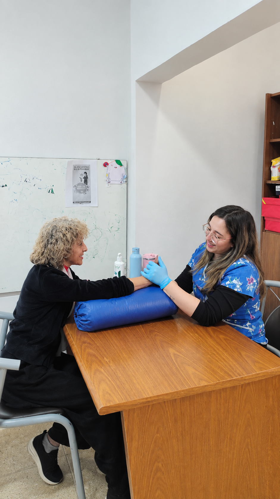
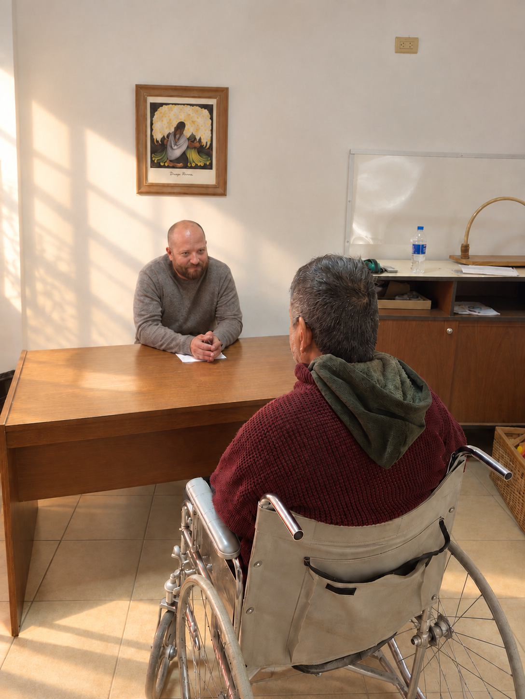
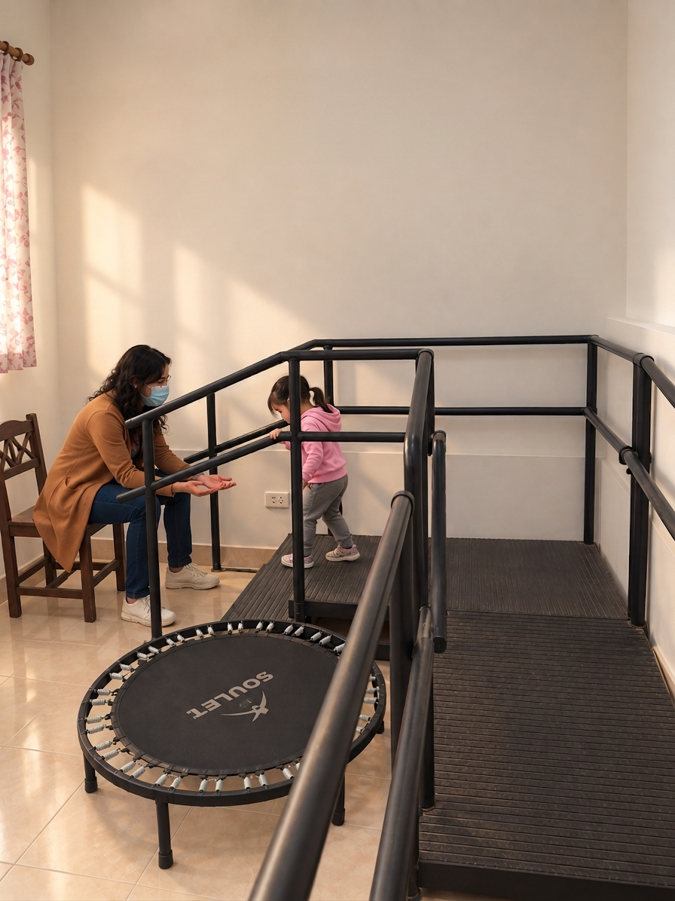
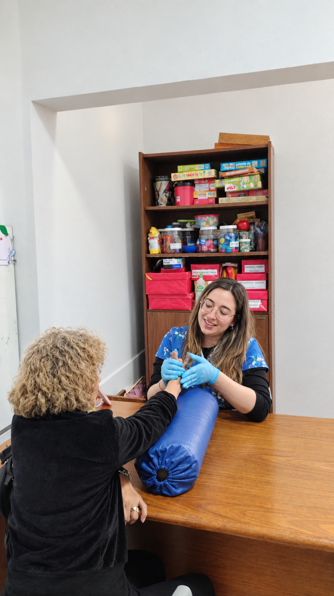
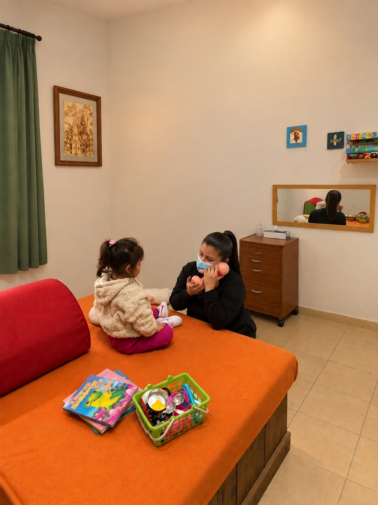
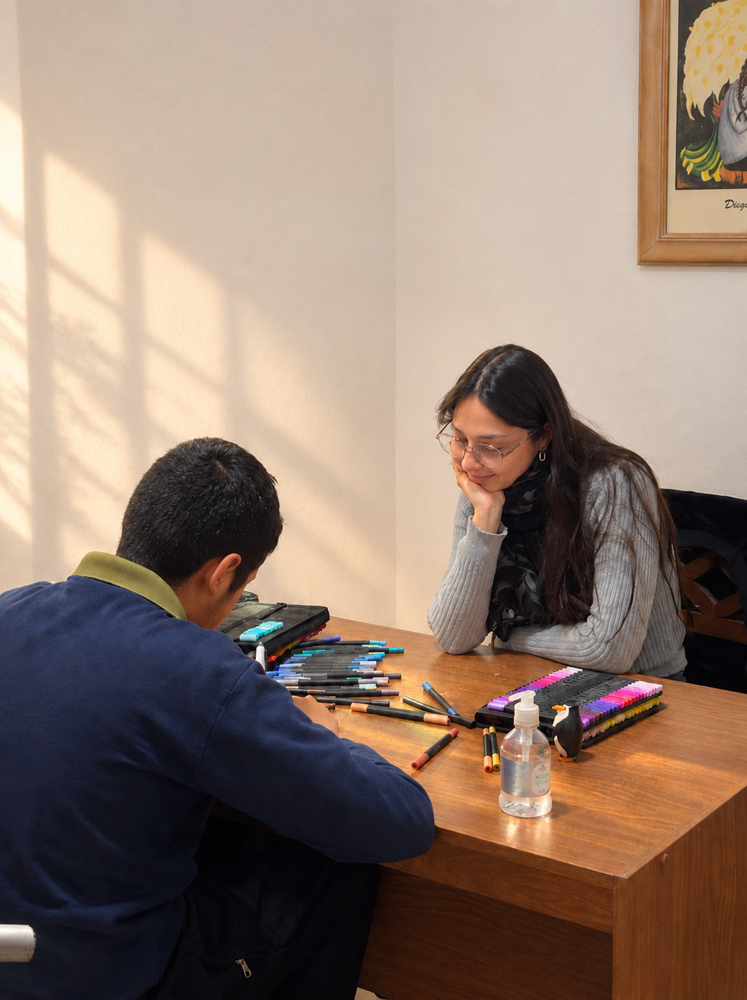

🗣️
Fonoaudiología
Evaluación y tratamiento de la comunicación, el lenguaje, el habla, la voz y la deglución.
En Neurolar trabajamos de forma integral con niños, jóvenes y adultos, combinando distintas especialidades para recuperar autonomía y mejorar la calidad de vida.


Neurolar es un centro dedicado a la rehabilitación neurológica. Nuestro equipo trabaja de manera conjunta para diseñar un plan personalizado para cada paciente, con una atención cercana, humana y profesional.
Evaluación y tratamiento de la comunicación, el lenguaje, el habla, la voz y la deglución.
Recuperación del movimiento, la fuerza, el equilibrio y la marcha mediante ejercicio terapéutico.
Diagnóstico y plan de rehabilitación médica, coordinando el trabajo de todo el equipo.
Estrategias para recuperar independencia en las actividades de la vida diaria.
Contención y acompañamiento emocional para pacientes y familias durante el proceso.
Apoyo en los procesos de aprendizaje, atención y desarrollo cognitivo.
Ambientes equipados para cada tipo de terapia.




Ingresá tu DNI para ver los turnos que tenés asignados.
Si no encontrás lo que buscás, escribinos y te respondemos a la brevedad.
Podés comunicarte por teléfono o WhatsApp al 3804 331200, por correo a neurolar468@gmail.com, o acercarte personalmente a Av. Ángel V. Peñaloza 468 en nuestros horarios de atención.
Atendemos de lunes a viernes de 8:30 a 12:00 h y de 17:00 a 21:00 h.
Contamos con Fonoaudiología, Kinesiología, Fisiatría, Terapia Ocupacional, Psicología y Psicopedagogía, trabajando en conjunto para un abordaje integral.
Sí. Nuestros espacios están preparados para acompañar a pacientes de distintas edades, con un plan adaptado a las necesidades de cada uno.
Sí, en Neurolar trabajamos con todas las obras sociales nacionales (ej. OSECAC, OSPE, Unión Personal), prepagas (ej. OSDE, Swiss Medical, Sancor Salud) y APOS.
Por supuesto. La participación de la familia es parte importante del proceso de rehabilitación.
Av. Ángel V. Peñaloza 468
Lunes a viernes
8:30 a 12:00 h y 17:00 a 21:00 h
Solo para personal autorizado de Neurolar.
| Fecha | Horario | Área | Médico / Profesional | Paciente | DNI |
|---|
Tip: elegí el día con las flechas o con el buscador de fecha, y el turno (mañana o tarde). Después elegí el profesional para ver o imprimir solo su agenda. Si cambiás la fecha de una fila, el turno pasa a ese día. Con Enter pasás a la fila de abajo. Todo se guarda solo: cada fila se guarda apenas está completa (fecha, horario, área, profesional, paciente y DNI).
| Apellido y nombre | DNI | Área / Rol | Estado | Legajo |
|---|